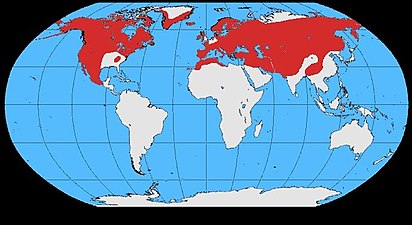

СТАТЬИ
| Ворон | |
|---|---|
| Научная классификация | |
| Домен: | Эукариоты |
| Царство: | Животные |
| Тип: | Хордовые |
| Класс: | Птицы |
| Отряд: | Воробьинообразные |
| Семейство: | Врановые |
| Род: | Вороны |
| Вид: | Обыкновенный ворон |
| Международное научное название | |
| Corvus corax (Linnaeus, 1758) | |
| Ареал | |
|  | |
| Охранный статус | |

| |
| Геохронология | |
| появился 0,781 млн лет | |
Питание
Рацион
Во́рон хорошо адаптирован к рассеянным и скудным источникам кормов и употребляет в пищу почти всё съедобное, что способен поймать либо обнаружить. Ключевое значение в рационе занимает падаль, в первую очередь достаточно крупных животных вроде волка или северного оленя, которая помогает ему выживать в суровых климатических условиях. При случае кормится снулой рыбой, дохлыми лягушками и грызунами. При этом птица также проявляет черты настоящего охотника — ловит разнообразную дичь размером до зайца или небольшого копытного, в том числе грызунов, птиц, ящериц, змей. В желудках воронов находят останки насекомых, скорпионов, моллюсков, земляных червей, морских ежей. Ворон может разорить птичье гнездо, полакомившись яйцами или птенцами. Растительные корма столь же разнообразны, сколь и животные, хотя в общем объёме занимают меньшую долю. В качестве примеров авторы называют ягоды черники, семена ядовитого дуба (Toxicodendron diversilobum), зерновку овсюга, плоды кактусов.
Американские биологи подметили, что при пищевом изобилии отдельные особи могут специализироваться на разных типах кормов: по наблюдениям в Орегоне, одни из гнездящихся по соседству воронов больше употребляли в пищу растительные корма, другие занимались поиском падали, третьи акцентировали внимание на ловле сусликов Белдинга (Urocitellus beldingi) и хорьков. Ворон охотно пользуется плодами человеческой деятельности: следует за оленьими погонами, скапливается возле скотных дворов и скотобоен, на свалках, возле мусоросборников и столиков для пикника. Охотно употребляет в пищу отбросы антропогенного характера, причём подобная диета, по наблюдениям в западной части пустыни Мохаве, приводит к более успешному выводу птенцов. В ряде случаев ворон способствует деградации редких и охраняемых видов: пустынного западного гофера, калифорнийского кондора, длинноклювого пыжика и карликовой крачки (Sterna antillarum).
Добывание корма
В поисках корма ворон способен подолгу парить в воздухе, что отличает его от других врановых птиц. Нередко следует за стадами оленей и волков, сопровождает кочевников. На земле роется в кучах растительного мусора, переворачивает щепки, исследует мышиные норы, проделывает отверстия в мягком грунте, преследует грызунов и другую мелкую дичь. У ворона верхняя часть клюва загнута, но не так сильно, как у специализирующихся на падали грифов или белоголового орлана. По этой причине он в меньшей степени способен разрывать толстую кожу крупного животного и при обнаружении падали иногда вынужден выжидать, пока это сделают другие хищники. Обнаружив добычу первыми, молодые особи громким криком могут подзывать зрелых птиц, прежде чем приступить к трапезе. Профессор Вермонтского университета Бернд Хейнрич полагает, что такое адаптивное поведение уменьшает территориальную агрессию и позволяет молодняку держаться вблизи от взрослых. По другой версии, передача информации способствует насыщению нескольких птиц в случаях, когда туша слишком большая для насыщения одной. Тем не менее, эксперименты с приманкой показывают, что размер добычи не оказывает влияния на кооперативное поведение птиц. То, что осталось после трапезы, ворон припрятывает в укромном месте, при этом приобретает новые навыки сохранения запасов, наблюдая за другими пернатыми.
Добывая пропитание, птица иногда проявляет удивительную находчивость, несвойственную для других видов птиц. Например, ворон не уступает песцу по ловкости добывания гусиных яиц. Вместо самостоятельной охоты он может терпеливо наблюдать, как полярная лисица разоряет очередное гнездо и прячет излишки, после чего быстро находит сделанные ею запасы. Клептопаразитизм проявляется и в явном отъёме добычи у хищников — например, у волков. Ворон охотно пользуется охраной общественных видов птиц, поднимающих крик при появлении потенциальной опасности: в одном наблюдении пара воронов присоединилась на свалке к стае скворцов и воро́н. Всю группу намеренно и неоднократно вспугивали. Птицы скоро возвращались на прежнее место, при этом во́роны всегда прилетали в последнюю очередь. По мнению исследователей, это может свидетельствовать в пользу гипотезы, что таким образом птицы предохраняются от ядовитого корма.
Размножение
Половая зрелость наступает в конце второго или третьего года жизни. Пары сохраняются многие годы, возможно пожизненно: этому способствует привязанность ворона к определённой территории и отчасти даже к месту для гнезда. В одном случае биологи наблюдали, как птицы несколько лет подряд возвращались на один и тот же скалистый уступ даже в случае, если предыдущая кладка уничтожалась хищниками. Аналогичный результат был получен в ходе искусственного эксперимента, во время которого яйца или птенцы специально изымались ради проверки дальнейшего поведения птиц. Хотя ворон считается типичной моногамной птицей, известны случаи полигинии: второй самец посещал гнездо самки во время отсутствия первого. Соседние пары гнездятся на расстоянии не менее километра друг от друга; Марцлуфф определяет охраняемое расстояние от гнезда от одного до пяти километров.
{kind=link}
К размножению вороны приступают зимой, когда земля ещё покрыта снегом: на большей части территории во второй половине февраля. В южной части ареала размножение может быть сдвинуто на более ранние сроки: например, в Туркменистане на первую декаду этого месяца, в Пакистане даже на декабрь. Напротив, в Гренландии, северной Сибири и высокогорном Тибете начало размножения сдвигается на середину апреля. Спариванию предшествуют замысловатые брачные полёты: в воздухе вороны выполняют сложные манёвры, аналогичные авиационным фигурам пилотажа, в том числе частичную «бочку». Кроме токового полёта, самец ходит перед самкой с важным видом; Конрад Лоренц описывает его позу следующим образом: голова высоко поднята, кроющие ушей взъерошены, шея раздута, крылья слегка приподняты, перья на брюхе вытянуты вниз, хвост раскрыт веером. Сложившуюся пару символизирует обоюдная чистка перьев.
Гнездо строит на деревьях и скалистых уступах, а также на разнообразных сооружениях, которые своим положением и формой могут напоминать эти уступы: геодезических вышках, маяках, опорах линий электропередач, колокольнях, под крышами высоких башен и зданий и т. п. В случае дерева гнездо обычно расположено на высоте не менее 3—4 м от поверхности земли в развилке ствола, изредка в основании толстой боковой ветви, часто малозаметно со стороны. Скалистый уступ чаще имеет вид ниши с каменной козырьком — расщелины или небольшой пещеры. Обе птицы добывают нужные для обустройства гнезда толстые сучья, траву и обрывки шерсти, но лишь самка занимается их укладкой. Готовая постройка, возведение которой занимает от одной до трёх недель, имеет достаточно добротный вид и внушительные размеры: диаметр 40—153 см и высоту 20—61 см. Глубина лотка 13—15 см. Обычно пара строит не одно, а два или три гнезда в пределах гнездового участка, и использует их поочерёдно.
{kind=link}

Количество яиц в кладке варьирует от одного до восьми, в большинстве случаев от четырёх до шести. Окраска как у серой вороны или грача: общий фон скорлупы голубовато-зелёный, поверхностные мелкие пятна серовато-зелёного или бурого цвета. Размеры яиц (42—63)х(30—38) мм. Насиживает в основном самка, самец приносит ей корм. Период инкубации 20—25 дней. Птенцы гнездового типа, появляются на свет асинхронно, при вылуплении покрыты густым бурым пухом на голове и спине. Первые одну-две недели самка неотлучно находится в гнезде, согревая выводок; добычей корма занимается самец. В дальнейшем оба родителя выкармливают птенцов. В возрасте 4—7 недель последние начинают летать, однако ещё длительное время — от нескольких недель до нескольких месяцев — держатся возле родителей. Окончательный распад выводков происходит лишь в конце следующей зимы.
Продолжительность жизни ворона в дикой природе составляет 10—15 лет. В неволе эти птицы могут прожить значительно дольше. В лондонском Тауэре вороны жили на протяжении более 40 лет. Известны случаи, когда особи в неволе доживали до 75 лет.
Интеллект
Во́рон считается одной из самых умных птиц. Учёные подтвердили наличие у ворона интеллекта. Когда учёные решили проверить, действительно ли ворон наделён интеллектом, птице давали пить воду из глубокого кувшина, которую он не мог достать клювом. Испытуемый ворон додумался бросать в ёмкость различные предметы, чтобы уровень воды поднялся. По словам руководителя эксперимента Алекса Тейлора, вороны способны различать объекты, которые держатся на плаву и которые тонут. Во́роны выбрасывали резину и пластмассу из кувшина, когда видели, что уровень воды в кувшине не повышается. Во́рон специально размачивает корку хлеба в луже и потом дробит её на части. При питье воды из лужи ворон склоняет и поворачивает голову таким образом, чтобы вода сама затекала в клюв, а не зачерпывает клювом воду, как большинство птиц.
Ворон и человек
{kind=link}
Из-за своей элегантности, сообразительности и способности к подражанию, в том числе и голосу человека, могут содержаться в домашних условиях в качестве домашнего животного. Первые месяцы своей жизни птицы мягкие и послушные, приручить их нетрудно. Повзрослев, птицы не признают никого, кроме хозяина, который растил их с птенцового возраста, становятся крайне ревнивы: могут атаковать домочадцев хозяина, особенно детей; домашних животных. У воронов высокие требования к условиям содержания: им нужен вольер, достаточно большой хотя бы для подлётов; из-за острого интеллекта птицам необходимы многочисленные и разнообразные игрушки. Стеснённые или скучающие вороны могут стать разрушителями: легко сдирают обои, портят мебель, книги, занавески, могут разбить оконное стекло или сломать владельцу клювом палец. После года-двух птицы взрослеют и пытаются улететь от родителя, в данном случае человека. Взрослые птицы практически не поддаются приручению. Популярность воронов как домашних питомцев выросла с развитием готической молодёжной субкультуры, но описанные обстоятельства делают этих птиц неподходящими для хозяев с малым опытом работы с врановыми и без подходящих для них условий.
В столице Великобритании приручённые во́роны традиционно живут в Тауэре.
Образ ворона в культуре
Ворон и война
{kind=link}
Ворон — отчасти падальщик, и в древности на полях сражений всегда скапливались стаи птиц. Образовалась прочная культурная связь между птицей и военными действиями, которая в одних источниках олицетворяла воинскую доблесть, в других — посредническую роль между миром живых и миром мёртвых, в третьих — гибель героя.
В ирландской мифологии ворон ассоциируется с богиней войны Морриган, которая принимала обличье этой птицы — например, в легенде о Кухулине (Cu Chulain). Изображения птицы сохранились на монетах и доспехах, останки птиц находили в кельтских захоронениях в континентальной части Европы. Тит Ливий в «Истории от основания города» описывает сражение римлян против галлов, во время которого на шлем трибуна Марка Валерия приземлился огромный ворон, принявшийся помогать уничтожать врагов; после сражения у воина закрепилось прозвище Корвинус. В Ирландии XVII века ворон с белым пятном на крыле, летящий с правой стороны от наблюдателя и при этом каркающий, считался добрым знаком, предвещающим удачу.
В германо-скандинавской мифологии ворон — почитаемая птица, изображение которой украшали знамёна кораблей викингов. Неразлучные спутники верховного бога Одина — вороны Хугин и Мунин, олицетворяющие собой мысль и память. Согласно легенде, птицы днём собирают информацию со всего мира, а вечером садятся на плечи хозяина и нашёптывают ему на ухо всё, что видели и слышали. Древние германцы намеренно оставляли павших в бою непогребёнными, чтобы их плоть съели посланники бога — волки и вороны.
Предвестник, прорицатель
Древние люди обратили внимание на реакцию воронов и ворон на предстоящее изменение погоды: перед штормом птицы проявляли явное беспокойство, c характерным криком метались из стороны в сторону. Вероятно, благодаря этому поведению ворон приобрёл репутацию буревестника, предсказателя ненастной погоды или иного, чаще трагического, события. Бертольд Лауфер приводит перевод найденной на Тибете рукописи IX века, согласно которой ворон — посредник между богами и людьми, — издавая различные звуки, мог предсказывать различные события, в том числе положительные — удачу или прибытие друга. В другом документе на тибетском языке утверждается, что посланная высшими силами птица своим дуновением может вызвать бурю в лесу, предупреждая жителей о прохождении богов.
Отношение к ворону как к предвестнику дурных событий сложилось в Западной Европе, Северной Африке, Передней, Южной и Восточной Азии. В Европе одно из наиболее ранних подтверждений взаимосвязи ворона и человека — наскальный рисунок каменного века в долине Камоника, на котором изображена птица, обращающаяся к людям. В Андалусии однократный крик ворона возле дома ассоциировался с предстоящим неудачным днём, троекратный — с ожиданием смерти. Сидящий на ветке ворон своим голосом указывал направление, откуда ждать беды. Елеазар Мелетинский в «Мифах народов мира» указывает на другие аналогичные приметы, связанные с птицей: её появление на левой стороне дома — к невзгодам, во время сева — к неурожаю, встреча двух воронов в воздухе — к войне. Согласно Плутарху, настойчивое внимание птиц к римскому оратору и философу Цицерону предзнаменовало его погибель.